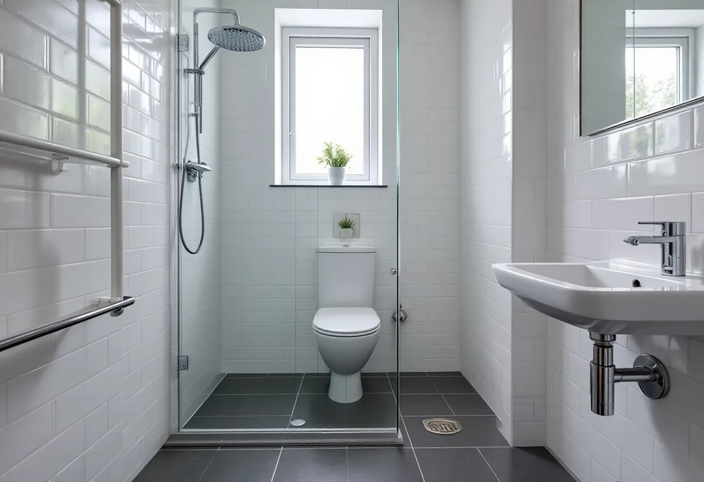

Platsbesök
Vi ser badrummet, golvbrunnen och ventilationen och frågar när huset byggdes.
Ett läckage i ett badrum i ett flerbostadshus kan nå grannen under. Därför är det värt att veta vad bostadsrättslagen säger om ansvaret innan badrummet rivs. Geal Entreprenad AB bygger om badrum i bostadsrätter med en kontakt för rivning, våtrum, el, VVS och plattsättning, och du får ett gratis platsbesök och ett skriftligt kostnadsförslag.
Södermalm har inte en typ av hus utan många. Stadsmuseets Stockholms Spår om Mariatorget berättar att branden sommaren 1759 ödelade bebyggelsen på Mariaberget, och att omkring 300 trähus i kvarteren väster om Maria kyrka förstördes. Husen skulle byggas upp igen i sten.
Längst västerut låg Bergsunds industrier fram till 1930-talet. Enligt texten om Hornstull revs alla fabriksbyggnader för att ge plats åt den bebyggelse som finns där i dag, och ett foto från början av 1930-talet visar den nya bostadsbebyggelsen på gång. Vid Skanstull byggdes Ringens köpcentrum och bostadsområde i slutet av 1970-talet, och på 1980-talet började ett bostadsområde byggas på Södra stationsområdet när järnvägen lämnade det. Framför Ricardo Bofills svängda byggnad ligger Fatbursparken, där sjön Fatburen en gång var som djupast.
I områdesfakta för Södra station är 1 915 av 2 230 bostäder bostadsrätter. Ett badrum i ett stenhus på Mariaberget, ett 30-talshus i Hornstull och ett hus från 1980-talet vid Fatbursparken har olika ålder på rör, bjälklag och golvbrunn, och det är där vi börjar.

Enligt bostadsrättslagen 7 kap. 12 § svarar du för reparationer på grund av en vattenledningsskada bara om skadan har uppkommit genom vårdslöshet eller försummelse. Det gäller din egen, men också den som hör till hushållet, en gäst och någon som utför arbete i lägenheten för din räkning.
Hantverkaren du anlitar räknas alltså in. Ett badrum byggt med fel fall mot brunnen eller en otät anslutning mot röret är därför inte bara en fråga mellan dig och företaget. Hos Geal utförs el och VVS av behöriga installatörer, och du får intyg och produktblad som visar hur rummet är byggt.
Lagen ger också föreningen ett verktyg. Om en åtgärd som kräver tillstånd enligt 7 § görs utan det, så att någon annans säkerhet äventyras eller det finns risk för omfattande skador på någon annans egendom, får föreningen enligt 12 a § avhjälpa bristen på din bekostnad om du inte själv gör det efter uppmaning. Att utan behövligt tillstånd utföra en sådan åtgärd är dessutom en av grunderna i 18 § för att nyttjanderätten kan förverkas.
Enligt bostadsrättslagen 7 kap. 7 § får du inte utan styrelsens tillstånd göra ingrepp i bärande konstruktion, installera eller ändra ledningar för avlopp, värme, gas eller vatten eller ändra ventilationen. Styrelsen får säga nej bara om åtgärden är till påtaglig skada eller olägenhet för föreningen, och den som är missnöjd kan begära att hyresnämnden prövar frågan.
Huset kan också ha ett utpekat kulturhistoriskt värde. På Stadsmuseets sida om klassificering beskrivs blått som den högsta klassen, för miljöer med synnerligen höga kulturhistoriska värden. Grönt betyder att miljön bedöms vara särskilt värdefull, gult att den har positiv betydelse för stadsbilden eller visst kulturhistoriskt värde. Som exempel visar museet Söderhallarna vid Medborgarplatsen, blåklassade sedan 2018.
Museet påpekar att klassificeringen är ett expertutlåtande utan juridiskt skydd eller rättslig verkan. Prövningen görs av stadsbyggnadskontoret i detaljplan eller bygglov. För ett badrum innanför väggarna är det därför styrelsen den du börjar med.
Ska fler rum göras om samtidigt finns mer om kök i gamla lägenheter under köksrenovering på Södermalm och om dörrar, listverk och väggar under snickare på Södermalm. Hur ett tätskikt byggs och vilka branschregler som gäller står på sidan om badrumsrenovering.
Vi ser badrummet, golvbrunnen och ventilationen och frågar när huset byggdes.
Du får en beskrivning av vad som ändras att lämna in.
Rivning, tätskikt, VVS, el och ytskikt redovisas var för sig.
Underlaget kontrolleras innan något nytt byggs upp.
Tätskiktet byggs efter branschreglerna och tillverkarens anvisning.
Du får intyg och produktblad att spara om något skulle hända.
Avdraget är 30 procent av arbetskostnaden och högst 50 000 kr per person och år, och tillsammans med rutavdrag högst 75 000 kr. Du måste äga bostaden när arbetet utförs.
I en bostadsrätt gäller avdraget enligt Skatteverket bara arbete innanför lägenhetens tak, väggar och golv som du ansvarar för enligt föreningens stadgar. Kakel och klinker, duschar, badkar och handfat och att byta golvbrunn ger avdrag. Att flytta golvbrunnen, flytta eller byta avloppsrör och stambyten ger det inte. Vi drar avdraget direkt på fakturan.
Husets ålder, vad som finns under det gamla golvet och om något ska flyttas avgör mest, tillsammans med de ytskikt du väljer. Efter ett gratis platsbesök får du ett skriftligt kostnadsförslag.
Tätskikt, golvbrunn, el, VVS och intyg.
Badrumsrenovering i Stockholm →Renovera, riva och sortera golvet.
Golvläggare på Södermalm →Kokvrå, gasspis och kulturvärden i lägenheten.
Köksrenovering på Södermalm →Äldre färglager, bättring och provytor.
Målare på Södermalm →Väggar, dörrar och förvaring i lägenhet.
Snickare på Södermalm →Ny tapet och gamla tapetlager.
Tapetsering på Södermalm →